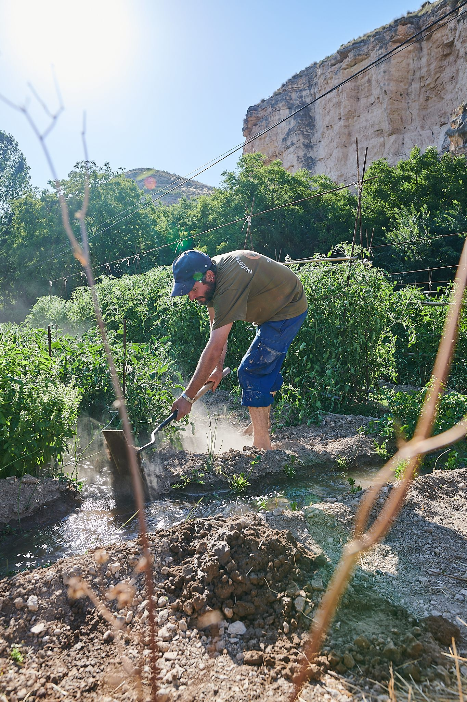
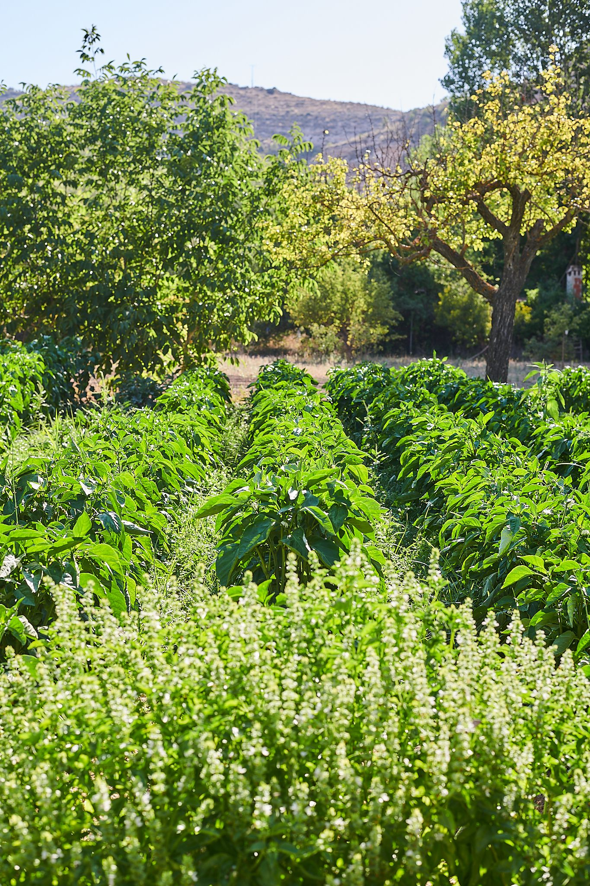

00 — HUERTO
El origen de nuestra cocina
A pocos kilómetros de Casas-Ibáñez, en el valle del Júcar cerca de Jorquera, cultivamos el huerto que alimenta cada uno de nuestros menús. No es un jardín decorativo: es el punto de partida de la cocina de Oba-.
Isaac, amigo de los chefs y experto en agricultura, cuida cada rincón del terreno. Aquí no perseguimos tendencias: cerramos el círculo con lo que nuestro entorno más inmediato nos ofrece.

TÉCNICA ANCESTRAL
Regamos con un sistema de riego árabe, pensado para gestionar el agua con la mayor eficiencia posible en un territorio que conoce bien el estrés hídrico. Es una técnica ancestral que combinamos con métodos japoneses y con el saber hacer local: una mezcla que responde a la tierra tal y como es, no a como nos gustaría que fuera.

QUÉ CULTIVAMOS
Lechugas, rúculas, ciruelas, saúco, zarzamoras, laurel y flores comestibles conviven con un peral de variedades antiguas casi olvidadas. Ajo, cebolla y patata quedan fuera: exigen demasiada agua para lo que nos devuelven.
Buena parte del trabajo consiste en recuperar lo que estaba a punto de perderse: vegetales de ribera autóctonos y especies en peligro de extinción que solo sobreviven porque alguien decide seguir sembrándolas. Lo que no cultivamos nosotros llega de cerca, de una red de unos 45 pequeños productores que comparten esta misma forma de entender el producto.
DEL HUERTO AL PLATO
«Todo sale de aquí.» Así resume Juan Sahuquillo lo que ocurre entre el huerto y la mesa. Dos platos del menú cambian cada día según lo que se ha recolectado esa misma mañana: los cocineros miran el mapa del terreno y deciden dónde toca ir a buscar.
Melones colgaos, tubérculos antiguos, hierbas silvestres y lácteos de oveja entran y salen de la carta según su momento. Incluso lo que sobra encuentra un lugar: los excedentes de garbanzo se maltean y fermentan en nuestra propia Weissbier, elaborada en el restaurante.
Próximamente abriremos el huerto a quien quiera conocerlo: visitas guiadas para recorrer este paisaje agreste que, en realidad, es donde empieza cada plato de Oba-.